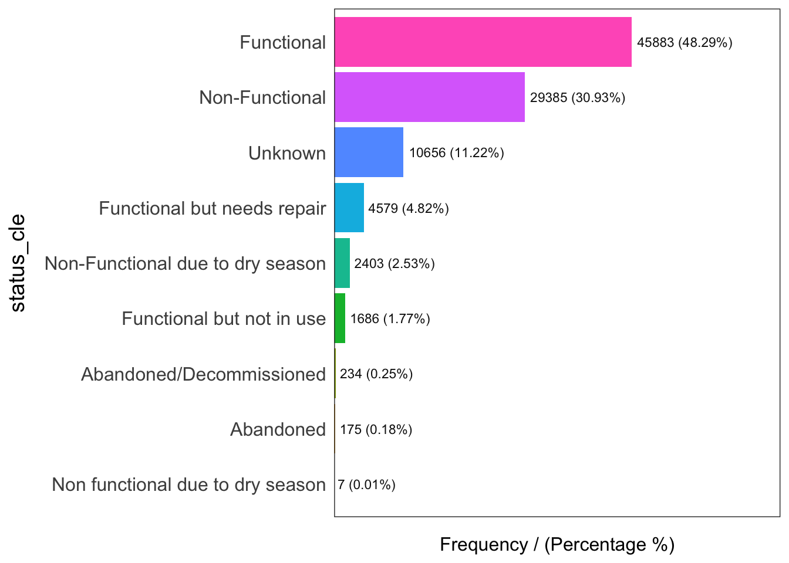
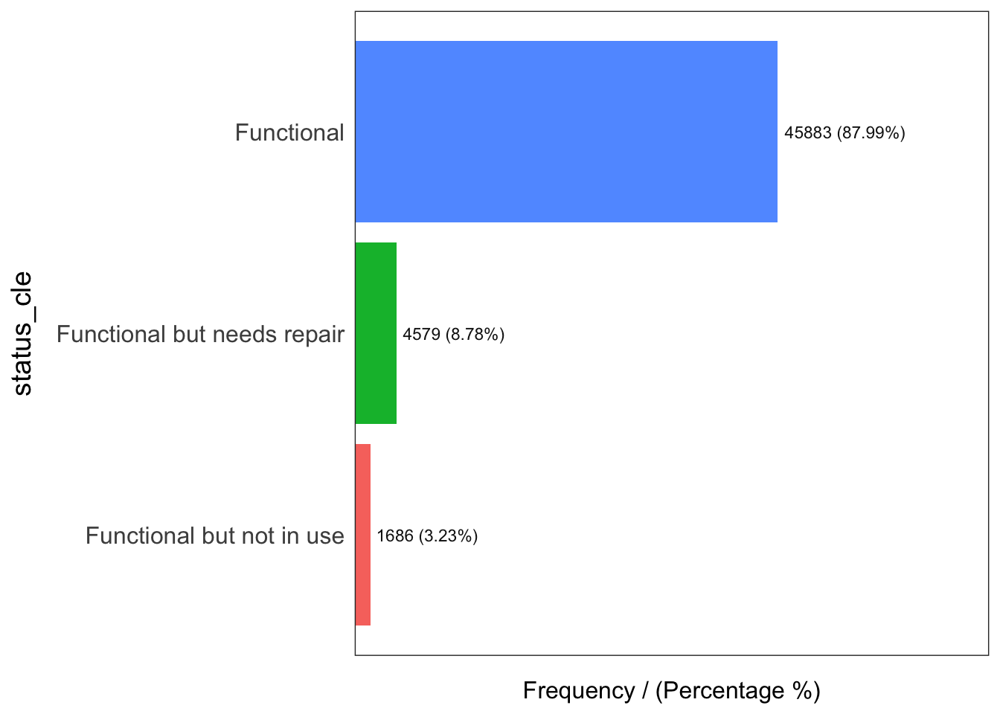

pacman::p_load(sf, spdep, tmap, tidyverse, funModeling)Inclass Exercise 2
Overview
In this example, we need the following packages:
sf
tidyverse
tmap
spdep
funModeling - for Exploratory data analysis
We will be looking at Nigeria water point information. We will be extracting data from water point data exchange platform and from geo-boundaries. The former provides information on the water point data while the latter provides Local Government Area Boundary data of Nigeria.
1. Import data
We will save the water point shapefile into a simple feature data table using st_read().
CRS = 4326 parameter will be used. This corresponds to WGS84 coordinate system. Data will take a while to load as there are 4million rows of data in geo_export file. Once loaded, we filter out water point data related to Nigeria only.
wp <- st_read(dsn = "geodata",
layer = "geo_export",
crs = 4326) %>%
filter(clean_coun == "Nigeria") #no need change projection systemWe save the sf data table using write_rds() of readr package in rds data format. We will refer to wp_nga variable from here onward.
write_rds(wp, "geodata/wp_nga.rds")Next, we import the boundary data of Nigeria into a simple feature data table.
nga <- st_read(dsn = "geodata",
layer = "nga_admbnda_adm2_osgof_271122",
crs = 4326)Reading layer `nga_admbnda_adm2_osgof_271122' from data source
`/Users/gladwinlam/R Quarto/gladwinlam/ISSS624/Inclass/Inclass2/geodata'
using driver `ESRI Shapefile'
Simple feature collection with 774 features and 5 fields
Geometry type: MULTIPOLYGON
Dimension: XY
Bounding box: xmin: 2.668534 ymin: 4.273007 xmax: 14.67882 ymax: 13.89442
Geodetic CRS: WGS 842. Data Wrangling
head(read_rds("geodata/wp_nga.rds"),20)Simple feature collection with 20 features and 72 fields
Geometry type: POINT
Dimension: XY
Bounding box: xmin: 3.597668 ymin: 4.97 xmax: 9.216867 ymax: 7.98
Geodetic CRS: WGS 84
First 10 features:
row_id source lat_deg lon_deg
1 429068 GRID3 7.980000 5.120000
2 222071 Federal Ministry of Water Resources, Nigeria 6.964532 3.597668
3 160612 WaterAid 6.486940 7.929720
4 160669 WaterAid 6.727570 7.648670
5 160642 WaterAid 6.779900 7.664850
6 160628 WaterAid 6.955560 7.779170
7 160632 WaterAid 7.017780 7.841670
8 642747 Living Water International 7.325500 8.985000
9 642456 Living Water International 7.171667 9.110000
10 641347 Living Water International 7.204867 9.216867
date_repor time_repor status_id water_sour water_so_2
1 2018-08-29 00:00:00.000 Unknown <NA> <NA>
2 2015-08-16 00:00:00.000 Yes Borehole Well
3 2020-12-04 00:00:00.000 Yes Borehole Well
4 2020-12-04 00:00:00.000 Yes Borehole Well
5 2020-12-04 00:00:00.000 Yes Borehole Well
6 2020-12-04 00:00:00.000 Yes Borehole Well
7 2020-12-04 00:00:00.000 Yes Borehole Well
8 2016-10-03 00:00:00.000 Yes Borehole Well
9 2016-10-03 00:00:00.000 Yes Borehole Well
10 2015-03-28 00:00:00.000 Yes Borehole Well
water_te_2 X_water_tec facility_t clean_coun clean_adm1
1 Tapstand Tapstand Improved Nigeria Ekiti
2 Mechanized Pump Mechanized Pump Improved Nigeria Ogun
3 Hand Pump Hand Pump Improved Nigeria Ebonyi
4 <NA> <NA> Improved Nigeria Enugu
5 Hand Pump Hand Pump Improved Nigeria Enugu
6 Hand Pump Hand Pump Improved Nigeria Benue
7 Hand Pump Hand Pump Improved Nigeria Benue
8 Mechanized Pump Mechanized Pump Improved Nigeria Benue
9 Hand Pump - India Mark III Hand Pump Improved Nigeria Benue
10 Hand Pump - India Mark III Hand Pump Improved Nigeria Benue
clean_adm2 clean_adm3 clean_adm4 install_ye installer rehab_year
1 Moba <NA> <NA> NA <NA> NA
2 Obafemi-Owode <NA> <NA> NA <NA> NA
3 Ohaukwu <NA> <NA> NA <NA> NA
4 Isi-Uzo <NA> <NA> NA <NA> NA
5 Isi-Uzo <NA> <NA> NA <NA> NA
6 Okpokwu <NA> <NA> NA <NA> NA
7 Okpokwu <NA> <NA> NA <NA> NA
8 Gboko <NA> <NA> 2016 <NA> NA
9 Bukuru <NA> <NA> 2016 <NA> NA
10 Bukuru <NA> <NA> 2015 <NA> NA
rehabilita manageme_2 status_cle pay fecal_coli fecal_co_2
1 <NA> <NA> <NA> <NA> <NA> <NA>
2 <NA> Other Functional No <NA> <NA>
3 <NA> <NA> <NA> <NA> <NA> <NA>
4 <NA> <NA> <NA> <NA> <NA> <NA>
5 <NA> <NA> <NA> <NA> <NA> <NA>
6 <NA> <NA> <NA> <NA> <NA> <NA>
7 <NA> <NA> <NA> <NA> <NA> <NA>
8 <NA> <NA> <NA> <NA> <NA> <NA>
9 <NA> <NA> <NA> <NA> <NA> <NA>
10 <NA> <NA> <NA> <NA> <NA> <NA>
subjective activity_i scheme_id
1 <NA> 1a117ba2-5256-4801-874c-f7611a4499dd <NA>
2 Acceptable quality <NA> <NA>
3 <NA> <NA> <NA>
4 <NA> <NA> <NA>
5 <NA> <NA> <NA>
6 <NA> <NA> <NA>
7 <NA> <NA> <NA>
8 <NA> NG160302LWI001005RNM <NA>
9 <NA> NG160115LOI001004RNM <NA>
10 <NA> NG150127LOI001004RNM <NA>
wpdx_id notes
1 6FV7X4JC+222 Tap Water
2 6FR5XH7X+R37 Ajura
3 6FR9FWPH+QVH <NA>
4 6FR9PJHX+2FF <NA>
5 6FR9QMH7+XW9 <NA>
6 6FR9XQ4H+6MF <NA>
7 6FV92R9R+4M7 <NA>
8 6FVC8XGP+622 <NA>
9 6FVF54C6+M26 <NA>
10 6FVF6638+WPX <NA>
orig_lnk
1 https://nigeria.africageoportal.com/datasets/GRID3::grid3-nigeria-water-points/about
2 <NA>
3 <NA>
4 <NA>
5 <NA>
6 <NA>
7 <NA>
8 <NA>
9 <NA>
10 <NA>
photo_lnk country_id
1 <NA> NG
2 <NA> NG
3 <NA> NG
4 <NA> NG
5 <NA> NG
6 <NA> NG
7 <NA> NG
8 <NA> NG
9 <NA> NG
10 <NA> NG
data_lnk
1 https://catalog.waterpointdata.org/datasets/grid3-nigeria-water-points-61ae7cd9
2 https://catalog.waterpointdata.org/datasets/federal-ministry-of-water-resources-nigeria-5efb3667
3 https://catalog.waterpointdata.org/datasets/rain-nigeria-5fe0f6d7
4 https://catalog.waterpointdata.org/datasets/rain-nigeria-5fe0f6d7
5 https://catalog.waterpointdata.org/datasets/rain-nigeria-5fe0f6d7
6 https://catalog.waterpointdata.org/datasets/rain-nigeria-5fe0f6d7
7 https://catalog.waterpointdata.org/datasets/rain-nigeria-5fe0f6d7
8 https://catalog.waterpointdata.org/datasets/test-5f17499e
9 https://catalog.waterpointdata.org/datasets/test-5f17499e
10 https://catalog.waterpointdata.org/datasets/test-5f17499e
distance_t distance_2 distance_3 distance_4 distance_5
1 767.3742 921.79187 3146.7332 41049.94 959.365
2 13364.9005 48.87743 4167.5191 13898.65 9405.783
3 9492.7619 4333.34280 693.2112 27381.92 72060.118
4 9319.0815 23276.33227 307.7162 34823.61 31665.447
5 5437.7141 18783.56566 134.6121 40785.89 31240.904
6 15924.8971 5405.46137 1970.2183 46971.32 44105.500
7 24001.9000 2251.27426 4376.8138 37454.57 45753.406
8 1633.9414 354.17381 175.9985 66655.91 37337.052
9 8213.0330 18316.99175 805.8909 88380.41 19153.497
10 20473.3891 10939.38492 460.3086 94855.63 8470.018
water_poin
1 {"2018-08-29": {"source": "GRID3", "status_id": "Unknown", "water_tech_clean": "Tapstand"}}
2 {"2015-08-16": {"source": "Federal Ministry of Water Resources, Nigeria", "status_id": "Yes", "water_source_clean": "Borehole", "water_tech_clean": "Mechanized Pump"}}
3 {"2020-12-04": {"source": "WaterAid", "status_id": "Yes", "water_source_clean": "Borehole", "water_tech_clean": "Hand Pump"}}
4 {"2020-12-04": {"source": "WaterAid", "status_id": "Yes", "water_source_clean": "Borehole"}}
5 {"2020-12-04": {"source": "WaterAid", "status_id": "Yes", "water_source_clean": "Borehole", "water_tech_clean": "Hand Pump"}}
6 {"2020-12-04": {"source": "WaterAid", "status_id": "Yes", "water_source_clean": "Borehole", "water_tech_clean": "Hand Pump"}}
7 {"2020-12-04": {"source": "WaterAid", "status_id": "Yes", "water_source_clean": "Borehole", "water_tech_clean": "Hand Pump"}}
8 {"2016-10-03": {"source": "Living Water International", "status_id": "Yes", "water_source_clean": "Borehole", "water_tech_clean": "Mechanized Pump"}}
9 {"2016-10-03": {"source": "Living Water International", "status_id": "Yes", "water_source_clean": "Borehole", "water_tech_clean": "Hand Pump - India Mark III"}}
10 {"2015-03-28": {"source": "Living Water International", "status_id": "Yes", "water_source_clean": "Borehole", "water_tech_clean": "Hand Pump - India Mark III"}}
rehab_prio served_pop local_popu crucialnes pressure usage_cap is_urban
1 NA NA NA NA NA 250 True
2 NA 140 887 0.1578354 0.140000 1000 False
3 NA 0 0 NA NA 300 False
4 NA 492 492 1.0000000 1.640000 300 False
5 NA 868 1919 0.4523189 2.893333 300 False
6 NA 81 81 1.0000000 0.270000 300 False
7 NA 0 0 NA NA 300 False
8 NA 9969 13740 0.7255459 9.969000 1000 True
9 NA 933 933 1.0000000 3.110000 300 False
10 NA 1998 11854 0.1685507 6.660000 300 False
days_since staleness_ is_latest location_i cluster_si clean_co_2 country_na
1 1483 62.65911 T 358773 1 NGA Nigeria
2 2592 44.17405 T 264633 1 NGA Nigeria
3 655 81.34550 T 397972 1 NGA Nigeria
4 655 81.34550 T 397984 1 NGA Nigeria
5 655 81.34550 T 397982 1 NGA Nigeria
6 655 81.34550 T 397976 1 NGA Nigeria
7 655 81.34550 T 397979 1 NGA Nigeria
8 2178 50.33174 T 321462 1 NGA Nigeria
9 2178 50.33174 T 321460 1 NGA Nigeria
10 2733 42.25373 T 224403 1 NGA Nigeria
water_so_3 water_tech status
1 Tap <NA> <NA>
2 Improved Tube well or borehole Motorised Functional (and in use)
3 Borehole fitted with Handpump <NA> <NA>
4 Gen. set powered borehole <NA> <NA>
5 Borehole fitted with Handpump <NA> <NA>
6 Borehole fitted with Handpump <NA> <NA>
7 Borehole fitted with Handpump <NA> <NA>
8 Borehole Submersible <NA>
9 Borehole India Mark III <NA>
10 Borehole India Mark III <NA>
adm2 adm3 management adm1 lat_deg_or lat_lon_de
1 <NA> <NA> <NA> <NA> NA (7.98?, 5.12?)
2 Obafemi-Owode <NA> Other Ogun NA (6.9645317?, 3.5976683?)
3 <NA> <NA> <NA> Enugu NA (6.48694?, 7.92972?)
4 <NA> <NA> <NA> Enugu NA (6.72757?, 7.64867?)
5 <NA> <NA> <NA> Enugu NA (6.7799?, 7.66485?)
6 <NA> <NA> <NA> Enugu NA (6.95556?, 7.77917?)
7 <NA> <NA> <NA> Enugu NA (7.01778?, 7.84167?)
8 <NA> <NA> <NA> <NA> NA (7.3255?, 8.985?)
9 <NA> <NA> <NA> <NA> NA (7.171666667?, 9.11?)
10 <NA> <NA> <NA> <NA> NA (7.204866667?, 9.216866667?)
lon_deg_or
1 NA
2 NA
3 NA
4 NA
5 NA
6 NA
7 NA
8 NA
9 NA
10 NA
public_dat
1 https://catalog.waterpointdata.org/datafiles/grid3-nigeria-water-points-61ae7cd9.csv
2 https://catalog.waterpointdata.org/datafiles/federal-ministry-of-water-resources-nigeria-5efb3667.xlsx
3 https://catalog.waterpointdata.org/datafiles/rain-nigeria-5fe0f6d7.xlsx
4 https://catalog.waterpointdata.org/datafiles/rain-nigeria-5fe0f6d7.xlsx
5 https://catalog.waterpointdata.org/datafiles/rain-nigeria-5fe0f6d7.xlsx
6 https://catalog.waterpointdata.org/datafiles/rain-nigeria-5fe0f6d7.xlsx
7 https://catalog.waterpointdata.org/datafiles/rain-nigeria-5fe0f6d7.xlsx
8 https://catalog.waterpointdata.org/datafiles/test-5f17499e.csv
9 https://catalog.waterpointdata.org/datafiles/test-5f17499e.csv
10 https://catalog.waterpointdata.org/datafiles/test-5f17499e.csv
converted count date_creat
1 <NA> 1 2021-12-06
2 #status_id, #water_source, #pay, #status, #management 1 2020-06-30
3 <NA> 1 2020-12-21
4 <NA> 1 2020-12-21
5 <NA> 1 2020-12-21
6 <NA> 1 2020-12-21
7 <NA> 1 2020-12-21
8 <NA> 1 2020-07-21
9 <NA> 1 2020-07-21
10 <NA> 1 2020-07-21
time_creat date_updat time_updat geometry
1 21:12:57.000 2021-12-06 21:12:57.000 POINT (5.12 7.98)
2 12:56:07.000 2020-06-30 12:56:07.000 POINT (3.597668 6.964532)
3 19:26:15.000 2020-12-21 19:26:15.000 POINT (7.92972 6.48694)
4 19:26:15.000 2020-12-21 19:26:15.000 POINT (7.64867 6.72757)
5 19:26:15.000 2020-12-21 19:26:15.000 POINT (7.66485 6.7799)
6 19:26:15.000 2020-12-21 19:26:15.000 POINT (7.77917 6.95556)
7 19:26:15.000 2020-12-21 19:26:15.000 POINT (7.84167 7.01778)
8 20:01:34.000 2020-07-21 20:01:34.000 POINT (8.985 7.3255)
9 20:01:34.000 2020-07-21 20:01:34.000 POINT (9.11 7.171667)
10 20:01:34.000 2020-07-21 20:01:34.000 POINT (9.216867 7.204867)From the above, we can see a number of NAs. We will replace NAs in ‘status_cle’ column with “unknown”. ‘status_cle’ shows the water point status and reports whether it is functional or not.
wp_nga <- read_rds("geodata/wp_nga.rds") %>%
mutate(status_cle = replace_na(status_cle, "Unknown"))We can visualise the various statuses of waterpoint using a bar chart with freq() function from funModeling library.
freq(data=wp_nga,
input = 'status_cle')
status_cle frequency percentage cumulative_perc
1 Functional 45883 48.29 48.29
2 Non-Functional 29385 30.93 79.22
3 Unknown 10656 11.22 90.44
4 Functional but needs repair 4579 4.82 95.26
5 Non-Functional due to dry season 2403 2.53 97.79
6 Functional but not in use 1686 1.77 99.56
7 Abandoned/Decommissioned 234 0.25 99.81
8 Abandoned 175 0.18 99.99
9 Non functional due to dry season 7 0.01 100.00As we see, less than half of the water points in Nigeria is functional.
wp_nga <- read_rds("geodata/wp_nga.rds") %>%
mutate(status_cle = replace_na(status_cle, "Unknown"))
wp_ngaSimple feature collection with 95008 features and 72 fields
Geometry type: POINT
Dimension: XY
Bounding box: xmin: 2.707441 ymin: 4.301812 xmax: 14.21828 ymax: 13.86568
Geodetic CRS: WGS 84
First 10 features:
row_id source lat_deg lon_deg
1 429068 GRID3 7.980000 5.120000
2 222071 Federal Ministry of Water Resources, Nigeria 6.964532 3.597668
3 160612 WaterAid 6.486940 7.929720
4 160669 WaterAid 6.727570 7.648670
5 160642 WaterAid 6.779900 7.664850
6 160628 WaterAid 6.955560 7.779170
7 160632 WaterAid 7.017780 7.841670
8 642747 Living Water International 7.325500 8.985000
9 642456 Living Water International 7.171667 9.110000
10 641347 Living Water International 7.204867 9.216867
date_repor time_repor status_id water_sour water_so_2
1 2018-08-29 00:00:00.000 Unknown <NA> <NA>
2 2015-08-16 00:00:00.000 Yes Borehole Well
3 2020-12-04 00:00:00.000 Yes Borehole Well
4 2020-12-04 00:00:00.000 Yes Borehole Well
5 2020-12-04 00:00:00.000 Yes Borehole Well
6 2020-12-04 00:00:00.000 Yes Borehole Well
7 2020-12-04 00:00:00.000 Yes Borehole Well
8 2016-10-03 00:00:00.000 Yes Borehole Well
9 2016-10-03 00:00:00.000 Yes Borehole Well
10 2015-03-28 00:00:00.000 Yes Borehole Well
water_te_2 X_water_tec facility_t clean_coun clean_adm1
1 Tapstand Tapstand Improved Nigeria Ekiti
2 Mechanized Pump Mechanized Pump Improved Nigeria Ogun
3 Hand Pump Hand Pump Improved Nigeria Ebonyi
4 <NA> <NA> Improved Nigeria Enugu
5 Hand Pump Hand Pump Improved Nigeria Enugu
6 Hand Pump Hand Pump Improved Nigeria Benue
7 Hand Pump Hand Pump Improved Nigeria Benue
8 Mechanized Pump Mechanized Pump Improved Nigeria Benue
9 Hand Pump - India Mark III Hand Pump Improved Nigeria Benue
10 Hand Pump - India Mark III Hand Pump Improved Nigeria Benue
clean_adm2 clean_adm3 clean_adm4 install_ye installer rehab_year
1 Moba <NA> <NA> NA <NA> NA
2 Obafemi-Owode <NA> <NA> NA <NA> NA
3 Ohaukwu <NA> <NA> NA <NA> NA
4 Isi-Uzo <NA> <NA> NA <NA> NA
5 Isi-Uzo <NA> <NA> NA <NA> NA
6 Okpokwu <NA> <NA> NA <NA> NA
7 Okpokwu <NA> <NA> NA <NA> NA
8 Gboko <NA> <NA> 2016 <NA> NA
9 Bukuru <NA> <NA> 2016 <NA> NA
10 Bukuru <NA> <NA> 2015 <NA> NA
rehabilita manageme_2 status_cle pay fecal_coli fecal_co_2
1 <NA> <NA> Unknown <NA> <NA> <NA>
2 <NA> Other Functional No <NA> <NA>
3 <NA> <NA> Unknown <NA> <NA> <NA>
4 <NA> <NA> Unknown <NA> <NA> <NA>
5 <NA> <NA> Unknown <NA> <NA> <NA>
6 <NA> <NA> Unknown <NA> <NA> <NA>
7 <NA> <NA> Unknown <NA> <NA> <NA>
8 <NA> <NA> Unknown <NA> <NA> <NA>
9 <NA> <NA> Unknown <NA> <NA> <NA>
10 <NA> <NA> Unknown <NA> <NA> <NA>
subjective activity_i scheme_id
1 <NA> 1a117ba2-5256-4801-874c-f7611a4499dd <NA>
2 Acceptable quality <NA> <NA>
3 <NA> <NA> <NA>
4 <NA> <NA> <NA>
5 <NA> <NA> <NA>
6 <NA> <NA> <NA>
7 <NA> <NA> <NA>
8 <NA> NG160302LWI001005RNM <NA>
9 <NA> NG160115LOI001004RNM <NA>
10 <NA> NG150127LOI001004RNM <NA>
wpdx_id notes
1 6FV7X4JC+222 Tap Water
2 6FR5XH7X+R37 Ajura
3 6FR9FWPH+QVH <NA>
4 6FR9PJHX+2FF <NA>
5 6FR9QMH7+XW9 <NA>
6 6FR9XQ4H+6MF <NA>
7 6FV92R9R+4M7 <NA>
8 6FVC8XGP+622 <NA>
9 6FVF54C6+M26 <NA>
10 6FVF6638+WPX <NA>
orig_lnk
1 https://nigeria.africageoportal.com/datasets/GRID3::grid3-nigeria-water-points/about
2 <NA>
3 <NA>
4 <NA>
5 <NA>
6 <NA>
7 <NA>
8 <NA>
9 <NA>
10 <NA>
photo_lnk country_id
1 <NA> NG
2 <NA> NG
3 <NA> NG
4 <NA> NG
5 <NA> NG
6 <NA> NG
7 <NA> NG
8 <NA> NG
9 <NA> NG
10 <NA> NG
data_lnk
1 https://catalog.waterpointdata.org/datasets/grid3-nigeria-water-points-61ae7cd9
2 https://catalog.waterpointdata.org/datasets/federal-ministry-of-water-resources-nigeria-5efb3667
3 https://catalog.waterpointdata.org/datasets/rain-nigeria-5fe0f6d7
4 https://catalog.waterpointdata.org/datasets/rain-nigeria-5fe0f6d7
5 https://catalog.waterpointdata.org/datasets/rain-nigeria-5fe0f6d7
6 https://catalog.waterpointdata.org/datasets/rain-nigeria-5fe0f6d7
7 https://catalog.waterpointdata.org/datasets/rain-nigeria-5fe0f6d7
8 https://catalog.waterpointdata.org/datasets/test-5f17499e
9 https://catalog.waterpointdata.org/datasets/test-5f17499e
10 https://catalog.waterpointdata.org/datasets/test-5f17499e
distance_t distance_2 distance_3 distance_4 distance_5
1 767.3742 921.79187 3146.7332 41049.94 959.365
2 13364.9005 48.87743 4167.5191 13898.65 9405.783
3 9492.7619 4333.34280 693.2112 27381.92 72060.118
4 9319.0815 23276.33227 307.7162 34823.61 31665.447
5 5437.7141 18783.56566 134.6121 40785.89 31240.904
6 15924.8971 5405.46137 1970.2183 46971.32 44105.500
7 24001.9000 2251.27426 4376.8138 37454.57 45753.406
8 1633.9414 354.17381 175.9985 66655.91 37337.052
9 8213.0330 18316.99175 805.8909 88380.41 19153.497
10 20473.3891 10939.38492 460.3086 94855.63 8470.018
water_poin
1 {"2018-08-29": {"source": "GRID3", "status_id": "Unknown", "water_tech_clean": "Tapstand"}}
2 {"2015-08-16": {"source": "Federal Ministry of Water Resources, Nigeria", "status_id": "Yes", "water_source_clean": "Borehole", "water_tech_clean": "Mechanized Pump"}}
3 {"2020-12-04": {"source": "WaterAid", "status_id": "Yes", "water_source_clean": "Borehole", "water_tech_clean": "Hand Pump"}}
4 {"2020-12-04": {"source": "WaterAid", "status_id": "Yes", "water_source_clean": "Borehole"}}
5 {"2020-12-04": {"source": "WaterAid", "status_id": "Yes", "water_source_clean": "Borehole", "water_tech_clean": "Hand Pump"}}
6 {"2020-12-04": {"source": "WaterAid", "status_id": "Yes", "water_source_clean": "Borehole", "water_tech_clean": "Hand Pump"}}
7 {"2020-12-04": {"source": "WaterAid", "status_id": "Yes", "water_source_clean": "Borehole", "water_tech_clean": "Hand Pump"}}
8 {"2016-10-03": {"source": "Living Water International", "status_id": "Yes", "water_source_clean": "Borehole", "water_tech_clean": "Mechanized Pump"}}
9 {"2016-10-03": {"source": "Living Water International", "status_id": "Yes", "water_source_clean": "Borehole", "water_tech_clean": "Hand Pump - India Mark III"}}
10 {"2015-03-28": {"source": "Living Water International", "status_id": "Yes", "water_source_clean": "Borehole", "water_tech_clean": "Hand Pump - India Mark III"}}
rehab_prio served_pop local_popu crucialnes pressure usage_cap is_urban
1 NA NA NA NA NA 250 True
2 NA 140 887 0.1578354 0.140000 1000 False
3 NA 0 0 NA NA 300 False
4 NA 492 492 1.0000000 1.640000 300 False
5 NA 868 1919 0.4523189 2.893333 300 False
6 NA 81 81 1.0000000 0.270000 300 False
7 NA 0 0 NA NA 300 False
8 NA 9969 13740 0.7255459 9.969000 1000 True
9 NA 933 933 1.0000000 3.110000 300 False
10 NA 1998 11854 0.1685507 6.660000 300 False
days_since staleness_ is_latest location_i cluster_si clean_co_2 country_na
1 1483 62.65911 T 358773 1 NGA Nigeria
2 2592 44.17405 T 264633 1 NGA Nigeria
3 655 81.34550 T 397972 1 NGA Nigeria
4 655 81.34550 T 397984 1 NGA Nigeria
5 655 81.34550 T 397982 1 NGA Nigeria
6 655 81.34550 T 397976 1 NGA Nigeria
7 655 81.34550 T 397979 1 NGA Nigeria
8 2178 50.33174 T 321462 1 NGA Nigeria
9 2178 50.33174 T 321460 1 NGA Nigeria
10 2733 42.25373 T 224403 1 NGA Nigeria
water_so_3 water_tech status
1 Tap <NA> <NA>
2 Improved Tube well or borehole Motorised Functional (and in use)
3 Borehole fitted with Handpump <NA> <NA>
4 Gen. set powered borehole <NA> <NA>
5 Borehole fitted with Handpump <NA> <NA>
6 Borehole fitted with Handpump <NA> <NA>
7 Borehole fitted with Handpump <NA> <NA>
8 Borehole Submersible <NA>
9 Borehole India Mark III <NA>
10 Borehole India Mark III <NA>
adm2 adm3 management adm1 lat_deg_or lat_lon_de
1 <NA> <NA> <NA> <NA> NA (7.98?, 5.12?)
2 Obafemi-Owode <NA> Other Ogun NA (6.9645317?, 3.5976683?)
3 <NA> <NA> <NA> Enugu NA (6.48694?, 7.92972?)
4 <NA> <NA> <NA> Enugu NA (6.72757?, 7.64867?)
5 <NA> <NA> <NA> Enugu NA (6.7799?, 7.66485?)
6 <NA> <NA> <NA> Enugu NA (6.95556?, 7.77917?)
7 <NA> <NA> <NA> Enugu NA (7.01778?, 7.84167?)
8 <NA> <NA> <NA> <NA> NA (7.3255?, 8.985?)
9 <NA> <NA> <NA> <NA> NA (7.171666667?, 9.11?)
10 <NA> <NA> <NA> <NA> NA (7.204866667?, 9.216866667?)
lon_deg_or
1 NA
2 NA
3 NA
4 NA
5 NA
6 NA
7 NA
8 NA
9 NA
10 NA
public_dat
1 https://catalog.waterpointdata.org/datafiles/grid3-nigeria-water-points-61ae7cd9.csv
2 https://catalog.waterpointdata.org/datafiles/federal-ministry-of-water-resources-nigeria-5efb3667.xlsx
3 https://catalog.waterpointdata.org/datafiles/rain-nigeria-5fe0f6d7.xlsx
4 https://catalog.waterpointdata.org/datafiles/rain-nigeria-5fe0f6d7.xlsx
5 https://catalog.waterpointdata.org/datafiles/rain-nigeria-5fe0f6d7.xlsx
6 https://catalog.waterpointdata.org/datafiles/rain-nigeria-5fe0f6d7.xlsx
7 https://catalog.waterpointdata.org/datafiles/rain-nigeria-5fe0f6d7.xlsx
8 https://catalog.waterpointdata.org/datafiles/test-5f17499e.csv
9 https://catalog.waterpointdata.org/datafiles/test-5f17499e.csv
10 https://catalog.waterpointdata.org/datafiles/test-5f17499e.csv
converted count date_creat
1 <NA> 1 2021-12-06
2 #status_id, #water_source, #pay, #status, #management 1 2020-06-30
3 <NA> 1 2020-12-21
4 <NA> 1 2020-12-21
5 <NA> 1 2020-12-21
6 <NA> 1 2020-12-21
7 <NA> 1 2020-12-21
8 <NA> 1 2020-07-21
9 <NA> 1 2020-07-21
10 <NA> 1 2020-07-21
time_creat date_updat time_updat geometry
1 21:12:57.000 2021-12-06 21:12:57.000 POINT (5.12 7.98)
2 12:56:07.000 2020-06-30 12:56:07.000 POINT (3.597668 6.964532)
3 19:26:15.000 2020-12-21 19:26:15.000 POINT (7.92972 6.48694)
4 19:26:15.000 2020-12-21 19:26:15.000 POINT (7.64867 6.72757)
5 19:26:15.000 2020-12-21 19:26:15.000 POINT (7.66485 6.7799)
6 19:26:15.000 2020-12-21 19:26:15.000 POINT (7.77917 6.95556)
7 19:26:15.000 2020-12-21 19:26:15.000 POINT (7.84167 7.01778)
8 20:01:34.000 2020-07-21 20:01:34.000 POINT (8.985 7.3255)
9 20:01:34.000 2020-07-21 20:01:34.000 POINT (9.11 7.171667)
10 20:01:34.000 2020-07-21 20:01:34.000 POINT (9.216867 7.204867)Next we filter out water points that are functional.
wpt_functional <- wp_nga %>%
filter(status_cle %in%
c("Functional",
"Functional but not in use",
"Functional but needs repair"))freq(data=wpt_functional,
input = 'status_cle')
status_cle frequency percentage cumulative_perc
1 Functional 45883 87.99 87.99
2 Functional but needs repair 4579 8.78 96.77
3 Functional but not in use 1686 3.23 100.00We also filter out non functional water points.
wpt_nonfunctional <- wp_nga %>%
filter(status_cle %in%
c("Abandoned/Decommissioned",
"Abandoned",
"Non-Functional",
"Non functional due to dry season",
"Non-Functional due to dry season"))
freq(data=wpt_nonfunctional,
input = 'status_cle')
status_cle frequency percentage cumulative_perc
1 Non-Functional 29385 91.25 91.25
2 Non-Functional due to dry season 2403 7.46 98.71
3 Abandoned/Decommissioned 234 0.73 99.44
4 Abandoned 175 0.54 99.98
5 Non functional due to dry season 7 0.02 100.00We create another data table where status of water point is unknown.
wpt_unknown <- wp_nga %>%
filter(status_cle == "Unknown")lengths(st_intersects(nga, wp_nga)) [1] 17 71 0 57 48 233 34 119 152 66 39 135 63 128 348 169 106 186
[19] 64 93 81 60 38 113 75 19 14 393 175 172 65 8 202 125 179 308
[37] 62 227 288 156 298 256 14 47 60 180 365 105 324 96 40 69 54 73
[55] 17 40 6 13 75 54 39 5 211 100 130 25 142 47 36 223 246 112
[73] 112 67 556 93 26 35 40 33 894 210 316 103 280 0 349 78 265 281
[91] 99 287 163 126 199 131 160 155 297 72 82 191 60 131 169 241 189 271
[109] 97 776 159 167 120 97 73 98 124 358 228 129 4 2 108 177 133 22
[127] 329 90 35 127 163 97 176 7 118 82 73 72 197 33 4 138 39 74
[145] 203 18 64 165 115 77 54 90 299 95 211 143 8 104 13 40 110 88
[163] 185 136 45 154 80 309 25 260 188 216 146 256 45 60 32 97 159 52
[181] 47 486 33 68 202 90 162 234 36 2 6 65 23 24 19 207 32 34
[199] 28 34 111 76 58 19 22 25 19 51 35 48 42 66 165 72 51 56
[217] 364 314 63 55 345 19 13 190 71 70 153 59 445 443 81 14 433 89
[235] 163 165 265 194 175 194 0 283 110 15 258 2 70 45 42 0 40 0
[253] 2 117 383 67 82 343 96 22 0 114 118 124 196 104 76 126 21 202
[271] 44 192 32 8 33 127 87 36 107 34 209 102 198 133 20 54 82 51
[289] 59 104 28 23 49 56 103 48 61 154 197 137 178 84 155 601 126 83
[307] 293 24 44 42 34 35 131 36 31 64 90 58 206 122 49 1 15 137
[325] 45 21 38 97 185 201 63 240 58 47 66 33 318 107 173 29 139 42
[343] 139 97 132 111 102 153 33 198 23 63 87 118 260 104 113 111 53 35
[361] 106 244 58 89 64 76 155 61 123 39 32 24 143 71 60 44 255 160
[379] 319 153 7 264 35 138 126 148 293 152 95 201 130 187 73 16 208 116
[397] 148 246 123 0 185 206 301 178 286 0 105 300 290 127 448 139 232 68
[415] 113 162 178 118 46 176 158 551 141 95 173 383 77 64 77 45 213 87
[433] 499 227 552 70 148 105 20 3 361 81 58 240 154 143 0 51 128 131
[451] 206 196 102 178 150 87 131 3 271 125 37 42 2 375 92 118 176 100
[469] 184 147 57 37 0 175 1 100 9 251 133 170 17 100 106 92 252 96
[487] 316 145 96 118 114 0 167 56 122 193 12 55 42 20 64 295 206 131
[505] 115 76 0 190 26 86 175 1 1 143 32 95 148 37 100 145 159 83
[523] 46 43 100 0 115 68 444 92 15 34 54 79 33 39 33 68 49 88
[541] 56 1 28 66 182 166 88 173 125 202 63 66 233 239 113 172 304 77
[559] 167 188 34 62 81 46 40 100 116 186 273 48 1 74 99 38 178 275
[577] 357 65 38 87 273 207 74 100 41 75 74 13 59 12 148 23 181 99
[595] 74 37 25 114 135 161 438 13 12 63 11 69 98 111 239 259 51 120
[613] 20 20 39 41 59 66 33 150 33 23 47 44 172 62 83 77 63 44
[631] 31 68 61 181 142 73 17 88 64 335 94 398 11 275 115 72 345 63
[649] 132 100 44 151 91 166 144 304 185 225 396 77 43 161 62 145 109 148
[667] 109 154 12 50 122 52 103 41 83 9 428 157 205 109 251 14 60 413
[685] 33 25 28 31 485 41 277 60 61 189 64 128 3 445 180 187 89 64
[703] 67 224 36 665 111 133 117 5 199 155 169 111 22 105 11 54 53 25
[721] 88 63 42 158 90 124 54 44 74 103 151 6 48 56 229 185 11 80
[739] 25 168 81 102 199 275 30 52 7 175 178 144 243 59 139 82 59 119
[757] 325 339 248 226 26 27 26 13 199 6 42 423 107 389 319 190 129 70We use st_intersects() to find the various status of water point in Nigeria and use length() to measure the count.
nga_wp <- nga %>%
mutate(`total wpt` = lengths(
st_intersects(nga, wp_nga))) %>%
mutate(`wpt functional` = lengths(
st_intersects(nga, wpt_functional))) %>%
mutate(`wpt non-functional` = lengths(
st_intersects(nga, wpt_nonfunctional))) %>%
mutate(`wpt unknown` = lengths(
st_intersects(nga, wpt_unknown)))Lastly, we save the the output in a new data table.
nga_wp <- nga_wp %>%
mutate(pct_functional = `wpt functional`/`total wpt`) %>%
mutate(`pct_non-functional` = `wpt non-functional`/`total wpt`)
write_rds(nga_wp, "geodata/nga_wp.rds")nga_wp <- read_rds("geodata/nga_wp.rds")
total <- qtm(nga_wp, "total wpt") +
tm_layout(legend.outside = TRUE,
legend.outside.position = 'right')
wp_functional <- qtm(nga_wp, "wpt functional")+
tm_layout(legend.outside = TRUE,
legend.outside.position = 'right')
wp_nonfunctional <- qtm(nga_wp, "wpt non-functional")+
tm_layout(legend.outside = TRUE,
legend.outside.position = 'right')
unknown <- qtm(nga_wp, "wpt unknown") +
tm_layout(legend.outside = TRUE,
legend.outside.position = 'right')
tmap_arrange(total, wp_functional, wp_nonfunctional, unknown, asp=1, ncol=2)